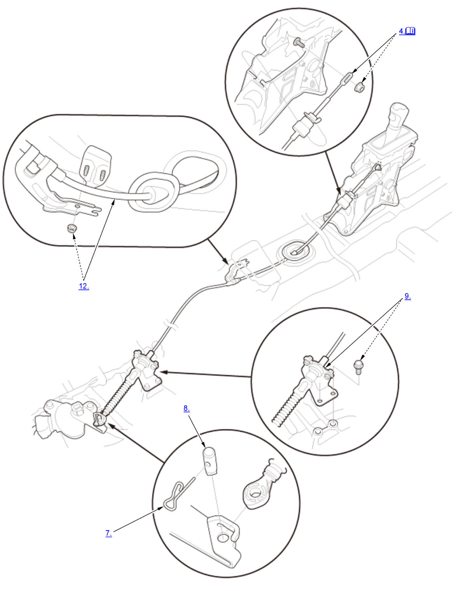

Shift Cable Removal and Installation (K20C2 (CVT)): Removal: Procedure
NOTE:
Numbered call-outs in figure pertain to list numbers in following procedure.

Courtesy of HONDA, U.S.A., INC. |
Detailed information, notes and precautions |
- Vehicle - Lift
- Center Console - Remove
- Shift Lever - Position
1. Insert a 6.0 mm (0.236 in) pin (A) into the positioning holes (B) with the shift lever in R position/mode.
NOTE: Use only a 6.0 mm (0.236 in) pin with no burrs. - Shift Cable (Shift Lever Side) - Remove
NOTE:
- While expanding the lock tab (A), rotate the socket holder retainer (B) counterclockwise until it stops, then remove the socket holder (C).
- Do not remove the shift cable by pulling the shift cable guide (D).
- Air Cleaner - Remove
- Intake Air Duct - Remove
- Lock Pin - Remove
- Control Pin - Remove
- Shift Cable Bracket - Remove
- Engine Undercover - Remove
- Heat Shield (Exhaust Pipe A) - Remove
- Shift Cable (Under Side) - Remove